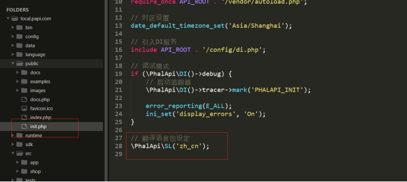

π框架简介
在我们做小程序应用或者是一些前后端完全分离的项目里面（或者做一个单页应用、SPA ：signal page application），一般我们后端PHP程序员都需要编写好相关的接口，同时还要写好相应的接口文档，以供前端的开发人员或者其他的项目团队进行使用。
前端程序员在做前后端分离的项目的时候，如果后端没有提供好相关 的即可，则前端可以使用一个 mock.js 脚本生成很多的测试数据。http://mockjs.com
一般的开发流程：
写接口，一个url地址就是一个接口（框架实现），一把来说我们接口都是返回json格式数据。
现在很多企业的一些项目不再使用api接口（基于REST规范，落地产品为 RESTful，应用到实际项目为 RESTFul api），而是使用RPC，如谷歌的gRPC，远程过程调用的方式去获取相关数据 http://doc.oschina.net/grpc?t=60136
- 单一从后端获取数据，一般这类接口都不需要做啥认证，请求方式一般都是get。
需要将客户端的数据提交到后端进行入库保存，或者有部分的数据是需要做一定的认证操作后才可以查看，这一类的接口一般都要事先做好接口的认证工作，证明有权限去访问该接口，请求的方式一般都是POST。
接口一般都需要做一些认证，对于一些特殊的接口，例如对后端数据库会造成更改，都必须要做出一定的验证，事先写好一个认证接口，同时在服务器端需要保存一定的认证信息，然后将认证的信息返回给客户端，客户端在每次请求其他类型的接口的时候，必须先携带该凭证。
写接口的调用文档，一把来说我们写好了接口，都需要出示一份文档（接口说明书），给予前端人员使用。
url地址
请求方式
- 参数传递
- 是否需要认证
- 返回数据类型
- 成功请求后的效果，示例代码，解释好每个字段的含义
- 如果失败或者出错的时候，返回的信息，示例代码，一般都要有错误状态码，消息提示
一般我们可以使用一些网站提供的在线工具进行接口的编写；（https://www.showdoc.cc）
或者自己使用markdown的编辑器自己使用markdown语法进行编写。熟悉一下markdown语法。
本次打算使用π框架来编写小程序的接口，接口的验证。
版本介绍
在线体验
亮点
第三方集成
SDK
查看
下载
https://www.phalapi.net/download.html
π框架安装
文档 ： 下载与安装
- 使用composer进行下载
1 | > composer create-project phalapi/phalapi local.papi.com |
- 安装后的目录结构，
public为站点根目录
- 配置一个虚拟主机
- 配置hosts文件
- 浏览器访问效果
文件目录结构
文档： 项目目录结构的差异
public目录
config目录
APP目录
源码
访问接口
- 在地址栏进行url访问
访问规则：域名?s=App.控制器名称.方法名称&key=value&key2=value2....
对应的控制器和方法
- 效果
访问参数验证
文档位置 ： Api接口服务层 >> 接口参数规则配置
注意：在每个控制器里面都会存在一个getRules方法，该方法里面的用于对应的接口传递的参数行为约束。
1 | /** |
TODO
文档生成
注释参考
在线文档
文档： 在线接口文档
π框架给我们提供了强大的文档生成方式，我们只需要在方法前面按照指定的格式编写注释，即可生成文档。
在方法前面编写注释

- 通过 域名/docs.php 方式访问在线文档
- 点击展开
- 详情查看

离线文档
文档： 生成离线文档
π框架提供了离线文档，供开发者使用。
使用方式：
1 | phalapi$ php ./public/docs.php |
注意： 根据实际补全路径信息，如 ./public/docs.php
- 执行如下的命令
- 目录查看
- 访问
域名/docs/
π框架的模型
文档： Model数据模型层与数据库操作
==注意==：π框架是没有视图、学习完成控制器之后，我们就可以学习模型，并且π框架里面的模型也不是自己写的，是使用别人开发的一个ORM框架（NotORM）。
数据库配置
模型的定义
文档参考：
NotORM是一个优秀的开源PHP类库，可用于操作数据库。PhalApi的数据库操作，主要是依赖此NotORM来完成。
NotORM官网：www.notorm.com
在src\app\Model目录下创建一个Movie.php文件
在src\app\Api\Site.php控制器文件实例化模型，获取数据
案例： 小程序轮播图
需求
需求：
需要为小程序提供一个轮播图的接口
分析
在传统网站开发里面，很多网站的首页里面也是会存在一个轮播图信息，那么如果我们要在传统网页里面实现一个轮播图，则我们可以使用一些插件快速的完成。
快速入门的案例：
https://www.swiper.com.cn/usage/index.html
我们的需求是在小程序里面实现一个轮播图功能，小程序内部存在一个组件可以实现轮播图效果，只需要给轮播提供素材即可。
效果：
分析：
请求方式：GET
是否认证：不需要（接口的认证）
返回数据类型 json
参数：
number代表需要几张轮播图- 设置一个默认值
position轮播位（轮播图分类）- 首页有轮播图，详情页也有轮播图，所以需要对齐进行分类，才方便读取。
- 上传轮播图的时候，需要给这些轮播图一个分类
轮播图点击之后跳转对应的业务
- 后台我们上传轮播图的时候，需要为轮播图做一些相关业务的关联，一般的关联都是某件商品的展示。
建表
设计表
轮播图表
| id | url | gid | is_on | create_time | update_time | xxxx |
|---|---|---|---|---|---|---|
| 图片地址 | 关联商品id | 表示轮播图是否上线 1代表上线，0代表没有上线 |
商品表
| id | name | price | number | …. | … | .. |
|---|---|---|---|---|---|---|
接口编写示例
- 定义控制器，创建一个getRules方法
- 创建一个lst方法
- 创建一个transfer方法，用于数据的格式化
- 效果
轮播图接口
- 在src/Api/Banner.php控制器文件，创建一个getRules方法
- 在src/Model/Banner.php模型文件，获取轮播图信息
- 在src/Api/Banner.php控制器文件，创建一个lst方法
- 在src/Api/Banner.php控制器文件，创建一个transfer方法，用于数据的格式化
- 效果
商品详情接口
在src\app\Api\Goods.php文件编写商品详情接口
详情查看
当我们点击轮播图之后，则需要打开一个页面显示商品的详情信息
在pages/swiper/swiper.wxml文件为每个轮播项绑定点击事件
在pages/swiper/swiper.js文件定义回调函数打开一个详情页
在pages/detail/detail.js文件获取商品主键id，向商品详情接口发送网络请求获取数据
在pages/detail/detail.wxml页面完成商品展示

效果
集成微信小程序
在config/config.js文件定义好url地址常量
在pages/swiper/swiper.js文件，调用接口获取轮播图信息
在pages/swiper/swiper.wxml文件完成布局
效果
其它
语言包
- 查看系统使用的默认语言包

- 配置自己的语言项
- 查看语言包函数
自定义异常类
- 自定义异常类

- 在轮播图信息为空的时候抛出异常
- 效果